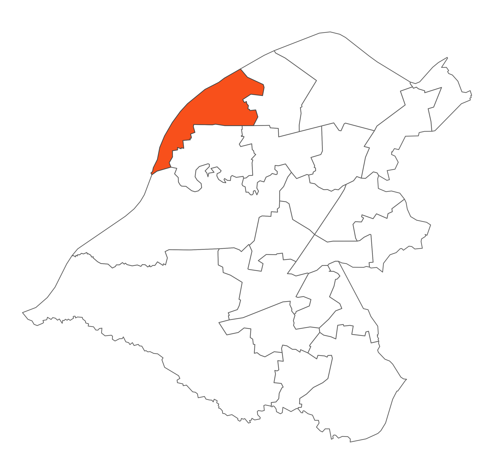

 Davyhulme West is bounded by the Manchester Ship Canal to the west, Davyhulme waste water treatment works to the north and residential areas of Davyhulme and Flixton to the east and south. The ward is mainly residential with large areas of private open land along the canal edge and the Mersey Valley to the south east tip of the ward. Trafford General Hospital is located in this ward.